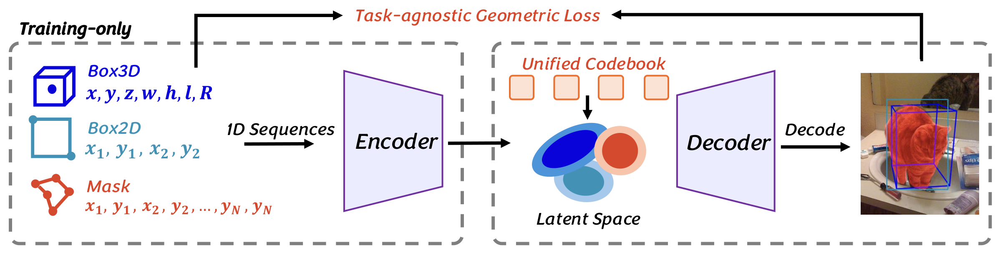
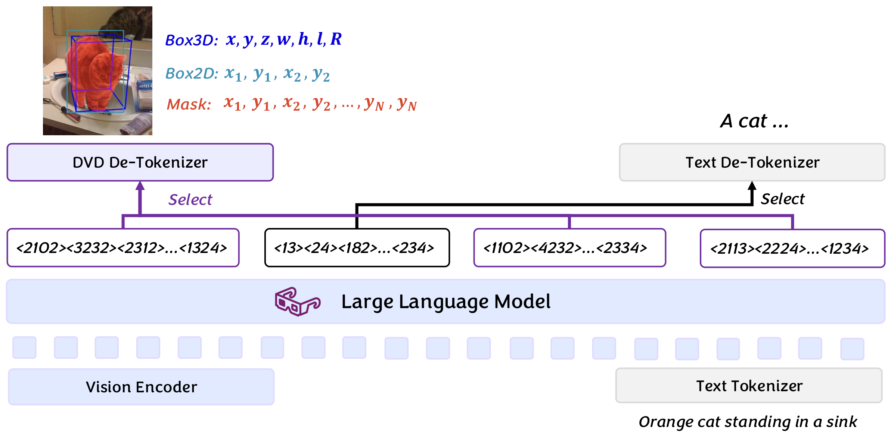
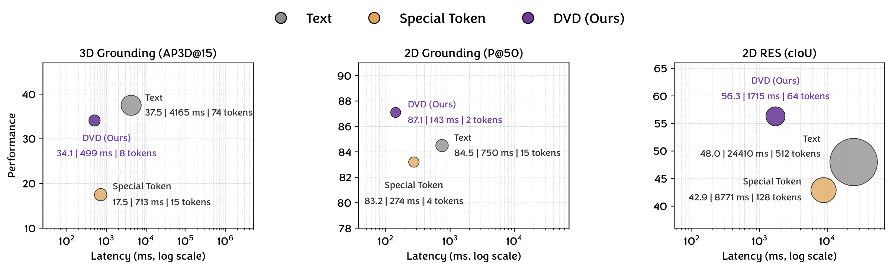
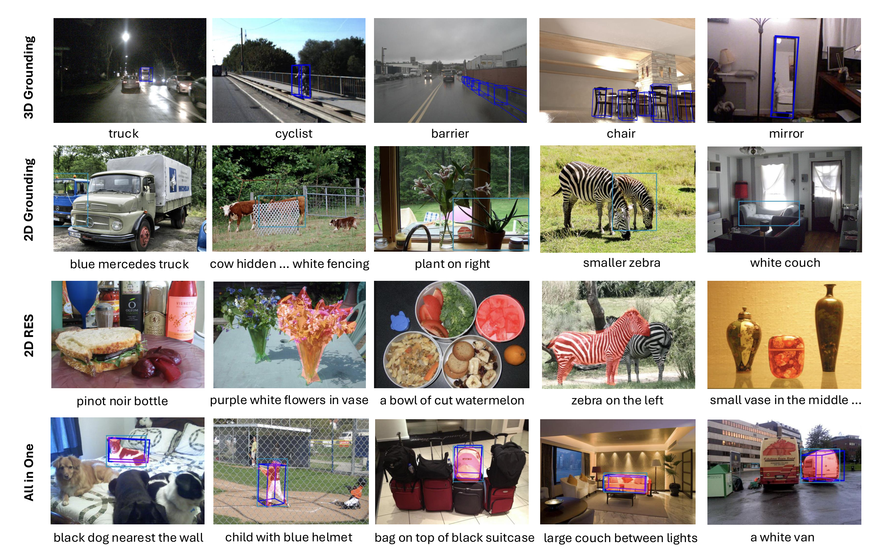
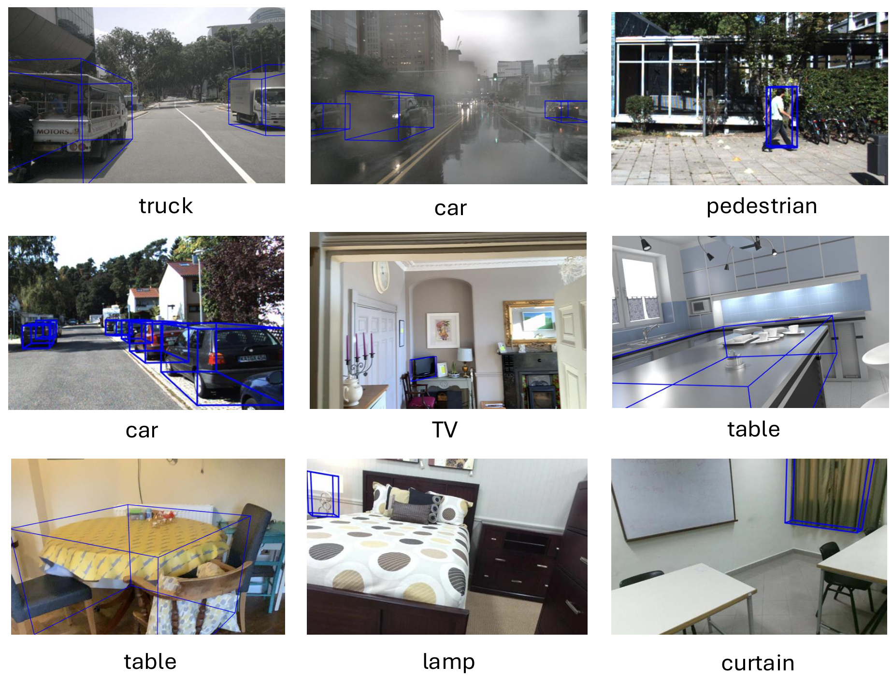
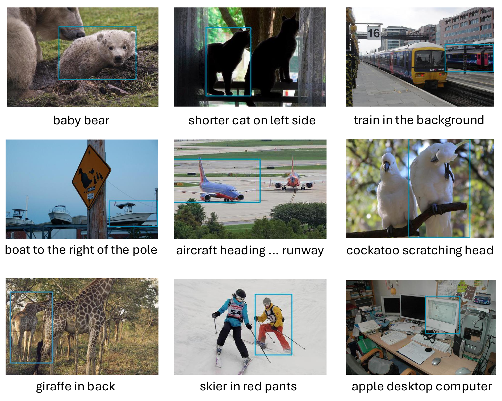
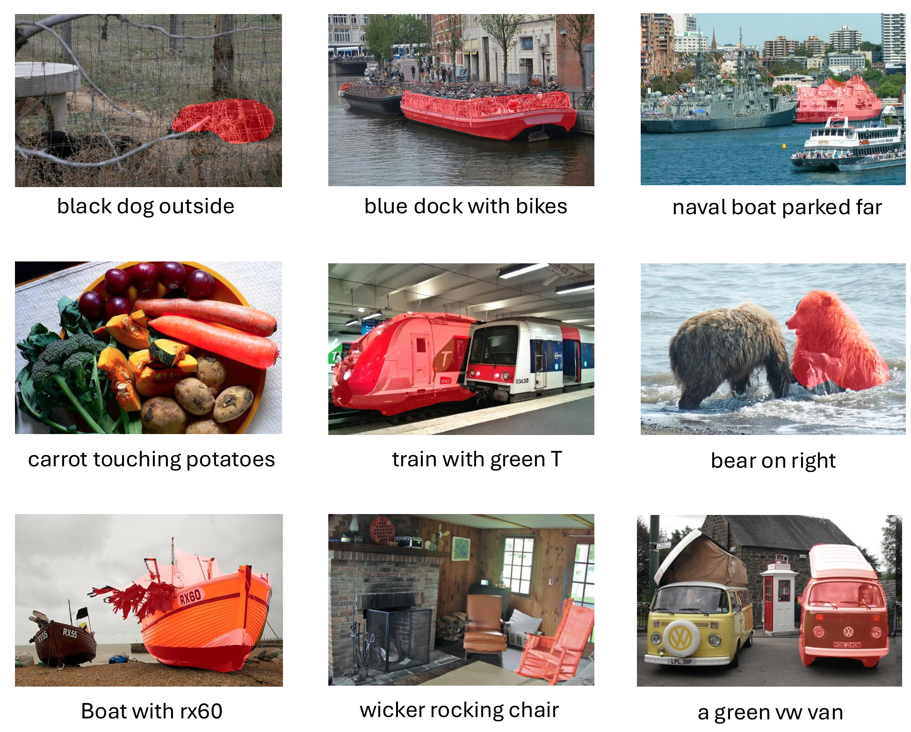

Multimodal large language models have made remarkable progress in bridging vision and language, facilitating various perception tasks essential for human-machine interaction, robotics, and autonomous driving. However, existing MLLM-based perception methods predominantly rely on text-based coordinate representation, which suffers from excessive token overhead, or fixed-range quantization, which suffers from range and precision constraints, especially for 3D domains with unbounded spatial range and high localization accuracy requirements. To address these challenges, we propose a dynamic vector decoding method named DVD, which unifies the representation of 2D and 3D perception tasks. Specifically, we first transform diverse perceptual representations (i.e., 2D bounding boxes, 2D masks, and 3D bounding boxes) into 1D vector sequences, which are then mapped to compact discrete tokens in the high-dimensional space. Then, a lightweight de-tokenizer enables seamless integration with MLLMs by decoding output tokens back to original 2D and 3D perceptual representations. Extensive experiments on 2D and 3D perception benchmarks including RefCOCO series, SUN-RGBD, KITTI, Hypersim, and nuScenes demonstrate that DVD achieves superior performance in 2D and 3D tasks and significantly reduces token overhead and inference latency. DVD provides an efficient and general framework for integrating perception capabilities into MLLMs, overcoming the inherent limitations of existing methods.
Existing MLLM-based perception methods typically represent coordinates as text tokens or discrete special tokens within a fixed integer range. Text-based methods can represent arbitrary precision and range, but they generate a large number of tokens (e.g., 512 tokens for a mask) and force the model to learn the structure of floating-point numbers. Fixed-range quantization reduces token count, but it sacrifices range and precision—critical limitations when moving from constrained 2D images to unbounded 3D scenes.
DVD unifies heterogeneous perceptual outputs by flattening them into 1D vector sequences:

Dynamic vector representation learning. 1D sequences serve as unified 2D/3D perceptual representations; a 1D encoder maps them into high-dimensional space for adaptive quantization and compression, a task-agnostic geometric loss supervises the heterogeneous representation learning, and a decoder recovers the original representations from the discrete tokens.
A 1D encoder-decoder architecture maps the vector sequences into a latent space and reconstructs them via a learnable codebook. Given an input sequence $\mathbf{s} \in \mathbb{R}^{B \times L \times 1}$, the encoder produces latent vectors $\mathbf{z} \in \mathbb{R}^{B \times \frac{L}{K} \times C}$, where $K$ is the downsampling factor and $C$ is the feature dimension. Each latent vector is quantized to the nearest codebook entry. The symmetric decoder upsamples the quantized vectors back to the original sequence.
Beyond the standard reconstruction and VQ losses, we introduce a task-agnostic geometric loss based on the bidirectional chamfer distance. The per-dimension L1 loss is sensitive to point ordering and parameterization rather than the underlying geometry, while the VQ loss only constrains the latent space. The geometric loss is permutation-invariant: for 3D tasks it computes the average minimum L1 distance between predicted and target 3D box vertices, and for 2D tasks between predicted and target 2D point sets, providing unified geometric supervision for both 2D and 3D perception tasks. The model is trained end-to-end with a combined loss:
$\mathcal{L}_{\text{total}} = \lambda_1 \cdot \mathcal{L}_{\text{L1}} + \lambda_2 \cdot \mathcal{L}_{\text{VQ}} + \lambda_3 \cdot \mathcal{L}_{\text{geo}}$
where the L1 loss ensures reconstruction accuracy, the VQ loss updates the codebook, and the geometric loss preserves the spatial structure (corners, edges, and shapes) of the decoded representations.

Overview of DVD. The MLLM vocabulary is extended with learned unified tokens and trained following standard LLM paradigms without modifications; at inference, a lightweight de-tokenizer reconstructs the original perceptual outputs from the discrete tokens with minimal overhead, drastically reducing sequence length and improving efficiency.
To integrate with MLLMs, we extend the vocabulary with $M$ new tokens corresponding to the $M$ code vectors in the codebook. The MLLM is then fine-tuned with the standard next-token prediction objective, without modifying the backbone. During inference, perception tokens from the MLLM output are fed into the pre-trained decoder (used as a de-tokenizer) to recover the 1D vector sequence, which is then reshaped into 2D boxes, masks, or 3D boxes. Because each perceptual output is represented by only a few tokens, the sequence length fed to the MLLM is greatly reduced, cutting latency while preserving spatial precision.
We evaluate DVD on 2D and 3D perception benchmarks. For 3D grounding, we use SUN-RGBD, Hypersim, ARKitScenes, KITTI, and nuScenes, covering indoor and outdoor scenarios, and report AP3D@15 following Omni3D. For 2D grounding and referring expression segmentation (RES), we use RefCOCO, RefCOCO+, and RefCOCOg, and report Precision@0.5 and cIoU, respectively. The same trained model is used to validate the performance of all tasks.
The unified vector autoencoder is trained on approximately 1.98M 3D boxes, 2.31M 2D boxes, and 1.52M 2D masks, with downsampling factor $K{=}2$, codebook size 4096, and latent channel 16. The MLLM is built on Qwen3-VL (2B and 8B variants) and fully fine-tuned on 2.0M mixed 2D/3D perception QAs.
Benefiting from dynamic vector decoding, DVD-2B surpasses SOTA MLLM-based methods on 3D grounding with 40.0%, 15.7%, and 19.8% AP3D on SUN-RGBD, Hypersim, and nuScenes, and achieves 89.9% Precision and 70.4% cIoU on RefCOCOg val — all with a single unified 2B model. With a larger backbone, DVD-8B further reaches 40.3%, 18.4%, and 24.4% AP3D on the three 3D datasets, and 88.7% Precision and 73.4% cIoU on RefCOCOg val.
| Method | 3D Grounding (AP3D@15) | 2D Grounding (P@0.5) | 2D RES (cIoU) | ||||||
|---|---|---|---|---|---|---|---|---|---|
| SUN-RGBD | Hypersim | nuScenes | RefCOCO | RefCOCO+ | RefCOCOg | RefCOCO | RefCOCO+ | RefCOCOg | |
| GroundingDINO | -- | -- | -- | 90.6 | 88.2 | 86.1 | -- | -- | -- |
| VistaLLM-7B | -- | -- | -- | 88.1 | 82.9 | 83.6 | 74.5 | 69.1 | 69.0 |
| LISA-7B | -- | -- | -- | -- | -- | -- | 74.9 | 65.1 | 67.9 |
| Text4Seg | -- | -- | -- | 88.3 | 83.5 | 82.4 | 74.7 | 68.5 | 70.7 |
| Qwen2.5-VL-3B | -- | -- | -- | 89.1 | 82.4 | 85.2 | -- | -- | -- |
| Qwen2.5-VL-7B | -- | -- | -- | 90.0 | 84.2 | 87.2 | -- | -- | -- |
| Rex-Omni | -- | -- | -- | -- | -- | 86.6 | -- | -- | -- |
| Seed1.5-VL | 33.5 | -- | -- | -- | -- | -- | -- | -- | -- |
| Qwen3-VL-2B | 33.8 | 12.0 | -- | 89.2 | 80.4 | 84.0 | -- | -- | -- |
| Qwen3-VL-8B | 36.2 | 12.7 | -- | 91.6 | 86.1 | 87.7 | -- | -- | -- |
| VST-3B | 37.3 | -- | -- | -- | -- | -- | -- | -- | -- |
| DVD-2B | 40.0 | 15.7 | 19.8 | 93.5 | 87.7 | 89.9 | 69.9 | 64.2 | 70.4 |
| DVD-8B | 40.3 | 18.4 | 24.4 | 93.0 | 87.7 | 88.7 | 75.4 | 70.1 | 73.4 |
Main results on 3D grounding (AP3D@15), 2D grounding (P@0.5), and 2D RES (cIoU). A single unified model is used for all tasks.
DVD-2B outperforms prior MLLM-based 3D perception methods across indoor and outdoor scenarios, surpassing VST-3B by 2.7% and 10.7% AP3D on SUN-RGBD and ARKitScenes. With a larger backbone, DVD-8B further achieves 40.3% and 24.4% AP3D on SUN-RGBD and nuScenes.
| Method | SUN-RGBD | Hypersim | ARKitScenes | KITTI | nuScenes |
|---|---|---|---|---|---|
| Gemini 2.0 Pro | 32.5 | -- | -- | -- | -- |
| Gemini 2.5 Pro | 29.7 | -- | -- | -- | -- |
| Seed1.5-VL | 33.5 | -- | -- | -- | -- |
| Qwen3-VL-2B | 33.8 | 12.0 | -- | -- | -- |
| Qwen3-VL-8B | 36.2 | 12.7 | -- | -- | -- |
| VST-3B | 37.3 | -- | 51.7 | -- | -- |
| DVD-2B | 40.0 | 15.7 | 62.4 | 31.4 | 19.8 |
| DVD-8B | 40.3 | 18.4 | 62.1 | 28.7 | 24.4 |
Despite being designed for unified 2D and 3D perception, DVD still outperforms advanced 2D grounding methods on the RefCOCO series: DVD-2B achieves 90.0% Precision on RefCOCOg test, surpassing Rex-Omni by 3.2%.
| Method | RefCOCO val | RefCOCO testA | RefCOCO testB | RefCOCO+ val | RefCOCO+ testA | RefCOCO+ testB | RefCOCOg val | RefCOCOg test |
|---|---|---|---|---|---|---|---|---|
| GroundingDINO | 90.6 | 93.2 | 88.2 | 88.2 | 89.0 | 75.9 | 86.1 | 87.0 |
| Qwen2.5-VL-7B | 90.0 | 92.5 | 85.4 | 84.2 | 89.1 | 76.9 | 87.2 | 87.2 |
| Rex-Omni | -- | -- | -- | -- | -- | -- | 86.6 | 86.8 |
| Seed1.5-VL | -- | -- | -- | -- | -- | -- | 84.7 | 85.2 |
| InternVL3.5-8B | 92.4 | 94.7 | 88.7 | 87.9 | 92.4 | 82.4 | 89.6 | 89.4 |
| UFO-8B | 91.8 | 94.3 | 87.5 | 86.9 | 91.3 | 80.6 | 87.9 | 88.6 |
| Qwen3-VL-8B | 91.6 | 93.1 | 88.7 | 86.1 | 91.1 | 80.0 | 87.7 | 88.4 |
| DVD-2B | 93.5 | 95.5 | 90.7 | 87.7 | 92.9 | 82.4 | 89.9 | 90.0 |
| DVD-8B | 93.0 | 95.2 | 89.7 | 87.7 | 92.9 | 82.7 | 88.7 | 89.8 |
DVD also generalizes to fine-grained 2D referring expression segmentation (RES). Despite having far fewer parameters and being a unified model, DVD-2B remains competitive with VistaLLM-7B on RefCOCOg test while running at much lower latency thanks to the reduced token overhead. With a larger backbone, DVD-8B achieves 73.4% and 76.6% cIoU on RefCOCOg val and test.
| Method | RefCOCO val | RefCOCO testA | RefCOCO testB | RefCOCO+ val | RefCOCO+ testA | RefCOCO+ testB | RefCOCOg val | RefCOCOg test |
|---|---|---|---|---|---|---|---|---|
| VLT | 67.5 | 70.5 | 65.2 | 56.3 | 61.0 | 50.1 | 55.0 | 57.7 |
| LAVT | 72.7 | 75.8 | 68.8 | 62.1 | 68.4 | 55.1 | 61.2 | 62.1 |
| VistaLLM-7B | 74.5 | 76.0 | 72.7 | 69.1 | 73.7 | 64.0 | 69.0 | 70.9 |
| LISA-7B | 74.9 | 79.1 | 72.3 | 65.1 | 70.8 | 58.1 | 67.9 | 70.6 |
| M2SA | 74.0 | 76.8 | 69.7 | 63.1 | 67.2 | 56.1 | 67.0 | 68.3 |
| PixelLM-7B | 73.0 | 76.5 | 68.2 | 66.3 | 71.7 | 58.3 | 69.3 | 70.5 |
| Text4Seg | 74.7 | 77.4 | 71.6 | 68.5 | 73.6 | 62.9 | 70.7 | 71.6 |
| PerceptionGPT-7B | 75.1 | 78.6 | 71.7 | 68.5 | 73.9 | 61.3 | 70.3 | 71.7 |
| DVD-2B | 69.9 | 70.7 | 69.7 | 64.2 | 68.2 | 61.8 | 70.4 | 71.0 |
| DVD-8B | 75.4 | 76.9 | 74.6 | 70.1 | 74.7 | 65.9 | 73.4 | 76.6 |
We compare the average number of tokens generated per object, inference latency, and performance of different representations on SUN-RGBD and RefCOCOg under identical training settings and computation resources. Text-based coordinates generate excessive tokens (512 and 74 for a mask and a 3D box), incurring high latency; while text preserves raw coordinate values and keeps a slight accuracy edge on 3D grounding (37.5% vs. 34.1% AP3D), this marginal gain comes with 9× more tokens and 8.3× higher latency (4165 ms vs. 499 ms per object). Special tokens reduce the cost but degrade severely (17.5% AP3D) due to limited range and precision. In contrast, DVD matches text-level precision on 2D tasks, largely closes the 3D gap, and delivers the best accuracy–efficiency trade-off.

Computation cost and performance comparison of different representations. Bubble area indicates the token count generated per object of the representation.
All ablations are conducted on DVD-2B trained with 30% of the full training iterations for faster validation. We first measure the vector reconstruction quality of the unified vector autoencoder using perception metrics between ground truth and decoded sequences: it achieves negligible reconstruction error — 90.8% AP3D, 100.0% Precision, and 84.8% cIoU on 3D grounding, 2D grounding, and 2D RES — demonstrating its ability to preserve spatial information.
Effect of codebook size
| Codebook | AP3D@15 avg. | P@50 avg. | cIoU avg. |
|---|---|---|---|
| 2048 | 88.9 | 84.5 | 81.6 |
| 4096 | 90.8 | 100.0 | 84.8 |
| 8192 | 85.1 | 99.6 | 76.8 |
Effect of geometric loss
| Geo. Loss | AP3D@15 avg. | P@50 avg. | cIoU avg. |
|---|---|---|---|
| ✗ | 80.7 | 99.1 | 74.8 |
| ✓ | 90.8 | 100.0 | 84.8 |
Effect of downsampling scale $K$
| Scale | AP3D@15 avg. | P@50 avg. | cIoU avg. |
|---|---|---|---|
| 1 | 89.3 | 100.0 | 92.7 |
| 2 | 90.8 | 100.0 | 84.8 |
| 4 | 83.7 | 31.5 | 60.4 |
Effect of latent hidden size $z$
| $z$ | AP3D@15 avg. | P@50 avg. | cIoU avg. |
|---|---|---|---|
| 8 | 83.0 | 100.0 | 83.7 |
| 16 | 90.8 | 100.0 | 84.8 |
| 32 | 88.4 | 100.0 | 85.3 |
Codebook size. A small codebook (2048) limits the capacity of the discrete latent space (88.9% AP3D), while an overly large one (8192) makes quantization and codebook learning harder, leaving under-trained entries (85.1% AP3D, 76.8% cIoU). A codebook size of 4096 achieves the best performance across all three tasks and is adopted as the default.
Geometric loss. Geometric guidance consistently improves reconstruction across all tasks, with notable gains on 3D grounding (+10.1% AP3D) and 2D RES (+10.0% cIoU), where fine-grained spatial fidelity (depth estimation, boundary delineation) is sensitive to small coordinate deviations. The gain on 2D grounding is marginal (+0.9% Precision) since coarse box localization is already near saturation — confirming that the geometric loss is an essential component, not merely a regularizer, for unifying 2D/3D grounding and mask-based segmentation in a single codebook.
Downsampling scale. Compared with the uncompressed representation ($K{=}1$), $K{=}2$ halves the token count while maintaining competitive performance and even slightly improving 3D grounding. An excessively large scale ($K{=}4$) causes severe information loss (31.5% Precision on 2D grounding). $K{=}2$ achieves the best trade-off between reconstruction precision and token cost.
Latent hidden size. A narrow bottleneck ($z{=}8$) constrains the encoded spatial information (83.0% AP3D), while enlarging $z$ to 32 brings no consistent gains as higher-dimensional latents are harder to quantize. $z{=}16$ provides sufficient capacity with stable quantization.
| 3D Grounding | 2D Grounding | 2D RES | AP3D@15 avg. | P@50 avg. | cIoU avg. |
|---|---|---|---|---|---|
| ✓ | 84.0 | -- | -- | ||
| ✓ | -- | 100.0 | -- | ||
| ✓ | -- | -- | 80.3 | ||
| ✓ | ✓ | ✓ | 90.8 | 100.0 | 84.8 |
Reconstruction performance of multi-task training in the unified vector autoencoder.
Multi-task training. Joint multi-task training improves performance on both 3D grounding (84.0% → 90.8% AP3D) and 2D RES (80.3% → 84.8% cIoU) over single-task training, while 2D grounding remains stable without degradation — demonstrating that DVD learns dynamic vector representations without sacrificing individual tasks.
The following figures show representative qualitative results of DVD on 3D grounding, 2D grounding, 2D referring segmentation, and unified 2D/3D perception. DVD achieves satisfactory results even in dark and complex 3D scenes, precise 2D localization and segmentation across diverse objects and scenes, and simultaneous 2D and 3D perception within a single model. Click or zoom in to inspect the high-resolution details.

Qualitative visualization of DVD on 2D and 3D perception tasks. Rows from top to bottom: 3D grounding, 2D grounding, 2D RES, and unified 2D/3D perception.

3D grounding results across indoor and outdoor scenarios; DVD maintains precise 3D localization even under challenging conditions such as rainy weather and cluttered scenes with dense objects.

2D grounding results: DVD accurately follows instructions and outputs tightly aligned bounding boxes without misalignment.

2D referring expression segmentation results: DVD precisely segments target objects of arbitrary shapes, even with ambiguous boundaries or overlapping objects.
Existing MLLM-based perception methods struggle with excessive token overhead from text-based coordinate representation and precision and range constraints from fixed-range quantization, especially in 3D domains. To address the key limitation, we propose DVD that unifies 2D and 3D perception task representations for efficient integration with MLLMs. By transforming heterogeneous perceptual outputs into 1D vector sequences and mapping them to compact discrete tokens, DVD eliminates the excessive token overhead and the precision limitations. Extensive experiments on 2D and 3D benchmarks show that DVD achieves superior performance while significantly reducing token count and inference latency, offering an efficient and general framework for equipping MLLMs with perception capabilities.
@article{hou2026dvd,
title={DVD: Dynamic Vector Decoding for Efficient MLLM-based Perception},
author={Hou, Jinghua and Liu, Zhe and Zhao, Hengshuang},
journal={arXiv preprint arXiv:XXXX.XXXXX},
year={2026}
}